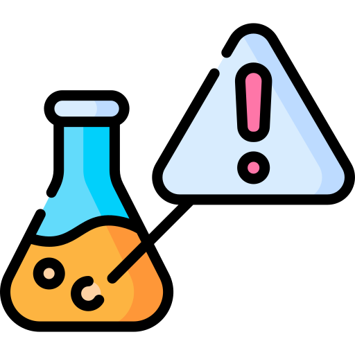
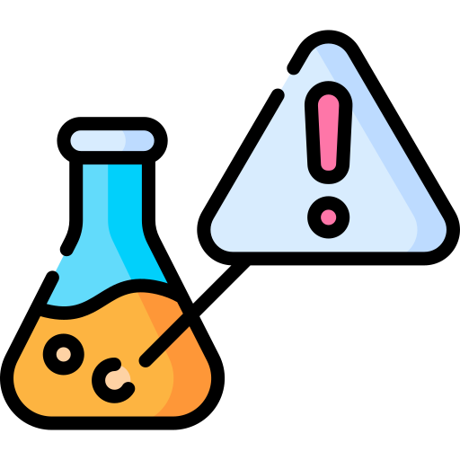

Tobacco products are among the most regulated commodities worldwide, requiring the most precise tobacco testing to ensure safety, quality, and compliance. Our full tobacco testing services serve both tobacco manufacturers and options makers regardless of their product type. Our testing processes guarantee accurate results which help companies satisfy industry standards when delivering healthy products to their customers.


Testing tobacco products is critical for several reasons:
- Compliance with Regulations: Ensures products meet stringent global and regional standards, including nicotine content analysis UK requirements.
- Consumer Safety: Identifies harmful substances and contaminants to protect public health through precise tobacco testing.
- Quality Assurance: Verifies product consistency, flavor accuracy, and labeling claims.
- Market Credibility: Builds trust among consumers and stakeholders through reliable tobacco testing practices.
Our work goes deeper than regular tobacco testing because we act as your quality assurance expert for your business success. Whether you’re launching innovative products or maintaining established lines, our expert team provides nicotine content analysis UK the analytical precision and regulatory insight you need to succeed in this demanding industry. From traditional tobacco products to next-generation alternatives, we ensure your products meet the highest standards of safety and quality.

METS Laboratory operates under rigorous European Committee for Standardization (CEN) technical standards and key ISO protocols, including:
- ISO 4387 for total particulate matter determination.
- ISO 10315 for nicotine content analysis UK, ensuring compliance with the region’s regulatory framework.
- ISO 8454 for carbon monoxide measurement in vapor phase.
As an ISO 17025 accredited facility, we maintain strict quality management systems and participate in regular proficiency testing. We also adhere to WHO Tobacco Laboratory Network (TobLabNet) operating procedures and the UK Tobacco and Related Products Regulations 2016 (TRPR), ensuring comprehensive compliance with international requirements.
- Tobacco Manufacturers: Supporting production, quality assurance, and innovation with dependable tobacco testing services.
- Importers and Exporters: Ensuring compliance, including nicotine content analysis UK, for seamless international trade.
- Retailers and Distributors: Assisting in product verification for market readiness.
- Research Institutions: Partnering for in-depth analysis and product development.
- Regulatory Bodies: Aiding in enforcement and compliance monitoring.
- Chemical Profiling: Analyzing nicotine, tar, and additive levels in accordance with nicotine content analysis UK protocols.
- Contaminant Screening: Detecting harmful substances like heavy metals and pesticides.
- Physical and Sensory Evaluation: Ensuring consistency in flavor, texture, and performance.
- Advanced Technology: Utilizing cutting-edge equipment for precise tobacco testing results.
- Tailored Solutions: Offering customized testing protocols to meet specific client needs.
- Cigarettes: Filtered, unfiltered, regular, menthol, and flavored types.
- Cigars: Large cigars, cigarillos, and little cigars in hand-rolled and machine-made formats.
- Pipe Tobacco: Custom blends for traditional pipe use.
- Roll-Your-Own (RYO) Tobacco: Loose tobacco for personalized cigarette creation.
- Chewing Tobacco: Loose leaf, plug, and twist forms.
- Snuff: Moist snuff (oral use) and dry snuff (nasal or oral use).
- Dissolvable Tobacco: Lozenges, strips, and pellets that dissolve in the mouth.
- Snus: Moist pouches discreetly placed under the upper lip.
- Hookah Tobacco (Shisha): Flavored blends for water pipes in fruit, spice, and herbal varieties.
- Heat-Not-Burn (HNB) Tobacco: Tobacco sticks or capsules used in non-combustion devices.
- E-Cigarettes: Disposable and rechargeable devices.
- Vape Devices: Open (refillable) and closed (pre-filled) systems.
- E-Liquids: Nicotine-containing and nicotine-free options in various flavors.
- Bidis: Small, hand-rolled, often flavored cigarettes.
- Kreteks: Clove-infused cigarettes combining tobacco with spices.
- Herbal Cigarettes: Tobacco-free products made from herbal blends.
- Tobacco Leaves: Raw and semi-processed leaves for industrial or personal use.
- Tobacco Extracts and Concentrates: Used for flavoring and additives.
- By-products: Residues such as tobacco dust repurposed for agriculture.
With a commitment to excellence, METS Laboratory offers industry-leading tobacco testing services, including nicotine content analysis UK, designed to help businesses achieve regulatory compliance, ensure product quality, and gain a competitive edge. Our comprehensive solutions cover traditional tobacco products, next-generation alternatives, and electronic nicotine delivery systems, ensuring safety, reliability, and innovation. Backed by advanced technology and adherence to international standards, we provide accurate, reliable results tailored to your needs. Partner with METS Laboratory to uphold the highest standards in safety, quality, and compliance, and build trust with consumers and stakeholders in this highly regulated industry.


 
